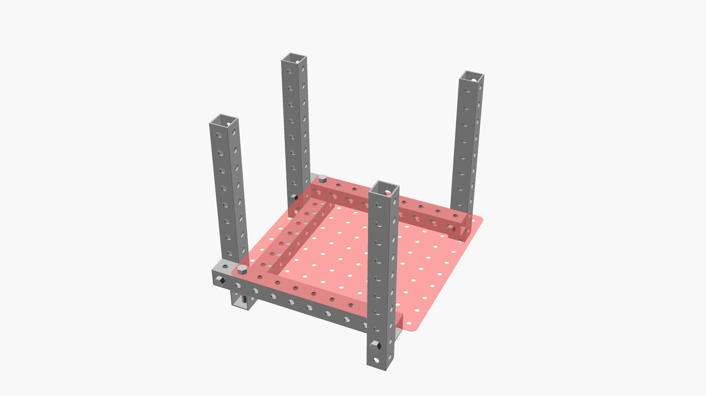

shelf joints
^ Techniques infobox ^^
| image | Shelf-joint-thumb.png |
| designers | Joy Livingwell |
| date | 2000 |
| vitamins | |
| materials | |
| transformations | |
| lifecycles | |
| tools | [[wrenches|Wrenches]] |
| parts | [[frames|Frames]], [[nuts|Nuts]], [[bolts|Bolts]], [[end_caps|End caps]], [[plates|Plates]] |
| techniques | [[tri_joints|Tri joints]] |
| git | |
| files | |
| suppliers | |
| reversible | true |
Introduction
Using frames and plates of the same dimension to create shelves is awesome.
Challenges
Plates make room for tri-joints challenging to find. Some configurations require cutting notches or holes into plates.
Approaches
Joy Livingwell developed these shelf joints which enable unmodified plates to be used with frames of the same dimension in a sturdy configuration which moves the tri joints to a less obvious location in the rear of the shelves and breaks the tri joints in the front of the shelves into a slightly degenerate configuation which retains strength necessary to bear weight.

